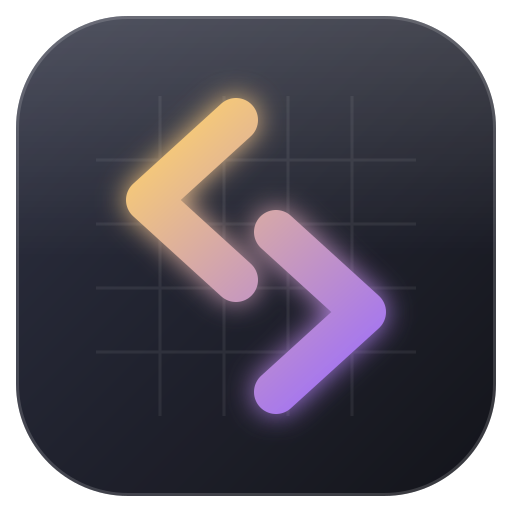

Se déplacer : flèches ou ZQSD · Courir : Maj · Parler, ouvrir : Espace, Entrée ou E · Plein écran : F11 · Manette : A valider, B retour, Start pause, Select carnet. Les touches se changent dans Options.

Saga TestLe moteur de tes jeux : ouvre un jeu fait avec Tafl et joue-le.
Le dossier d'un jeu créé dans Tafl (Fichier › Nouveau jeu), ou son jeu.json. Dans Tafl, le bouton « Jouer » l'ouvre directement ici.
Se déplacer : flèches ou ZQSD · Courir : Maj · Parler, ouvrir : Espace, Entrée ou E · Plein écran : F11 · Manette : A valider, B retour, Start pause, Select carnet. Les touches se changent dans Options.